原始文档展示
Zabbix 基础告警通知闭环完成
第一阶段：Zabbix 基础告警通知闭环完成
项目：Zabbix 监控告警 + 邮件 + 钉钉单聊通知
整理日期：2026-05-27
一、结论
本阶段已经完成 Zabbix 基础告警通知闭环：Zabbix 触发器产生 Problem 后，可通过 Action 同时发送到 163 邮箱和钉钉企业内部应用机器人单聊。
当前已覆盖核心设备的基础可用性、Agent/SNMP 可用性、磁盘空间、CPU/内存/Swap、RPA Agent 状态，以及 SQL Server 1433 端口可用性。NAS 存储池、RAID、硬盘健康和网络接口精细化告警放到第二阶段处理。
二、配置范围
| 范围 | 本阶段配置结果 |
| 通知渠道 | Email(HTML) 通过 163 SMTP；钉钉企业内部应用机器人单聊。 |
| 通知用户 | Admin 用户绑定 Email(HTML) 和钉钉单聊机器人。 |
| Action 名称 | 核心设备告警通知。 |
| Action 条件 | 主机群组属于 Databases、Linux servers、Network devices、rpa-windows、Zabbix servers、群晖nas 任一组。 |
| 发送媒介 | 全部可用媒介，即同时走邮箱和钉钉。 |
| 验证结果 | 临时测试触发器触发后，邮箱和钉钉均收到告警通知。 |
三、已覆盖告警项
| 类别 | 覆盖情况 | 说明 |
| 所有设备 Ping 不通 | 已覆盖 | 网络设备、NAS、路由器、交换机已有 Unavailable by ICMP ping。 |
| Agent / SNMP 不可用 | 已覆盖 | Windows/Linux Agent 不可用、网络设备 No SNMP data collection 已有触发器。 |
| 服务器磁盘空间不足 | 已覆盖 | Windows 文件系统 Space is low / critically low 已启用。 |
| RPA 机器离线 | 已覆盖 | Zabbix agent is not available 与 Zabbix Agent 2 is not running 已覆盖。 |
| 服务机关键端口不通 | 已配置 | SQL Server [SQL_SERVER_IP] 已新增 1433 端口可用性监控和触发器。 |
| CPU / 内存 / Swap | 已有模板覆盖 | 保留模板自带告警，后续按误报情况调阈值。 |
| NAS 存储池 / RAID / 硬盘健康 | 第二阶段 | 当前没有 Synology 专用模板，暂不纳入第一阶段。 |
| 路由器/交换机接口 Down | 第二阶段 | 后续只对公网口、上联口、核心互联口做精细化告警。 |
基础可用性与 Agent 告警验证截图
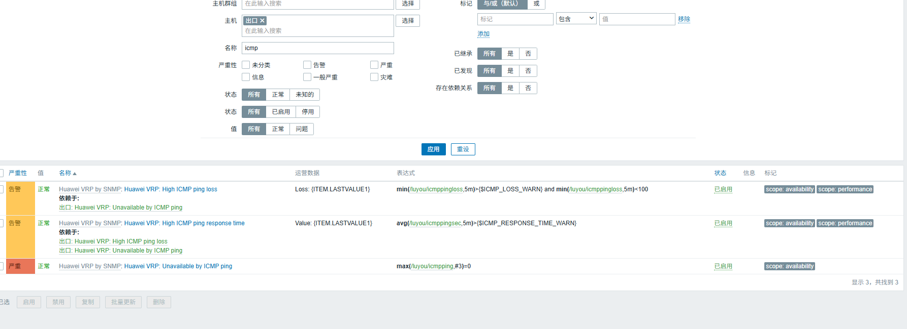
图：出口路由器 ICMP 触发器确认。原因：确认“设备 Ping 不通”是否已有正式触发器；操作：搜索 icmp；结果：Unavailable by ICMP ping 已启用。
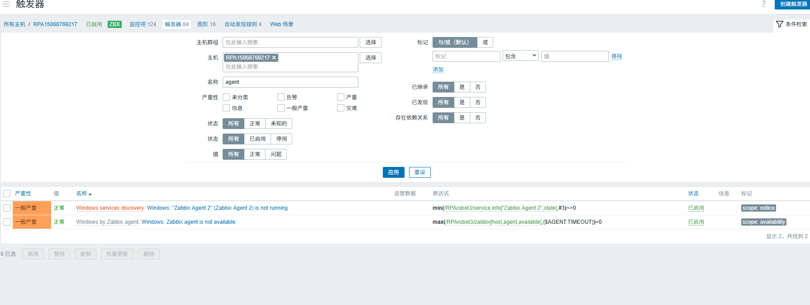
图：RPA 主机 Agent 相关触发器确认。原因：确认 RPA 机器离线/Agent 异常是否会告警；操作：搜索 agent；结果：Agent 不可用和 Agent 2 未运行触发器已启用。
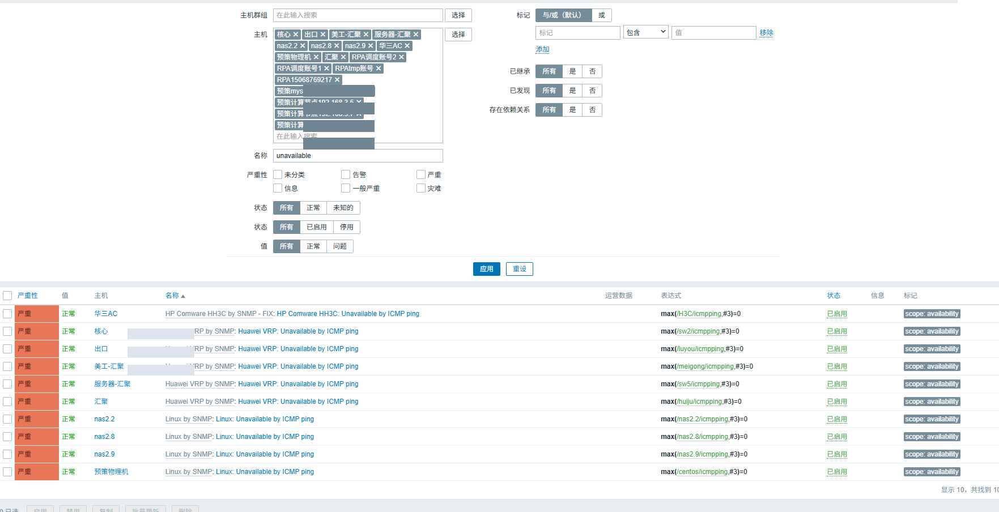
图：核心网络设备、NAS、路由器、交换机 ICMP 不可用触发器统一确认。原因：核对第一类“所有设备 Ping 不通”；操作：批量搜索 unavailable；结果：核心网络与 NAS 设备均已有 ICMP 不可用触发器。
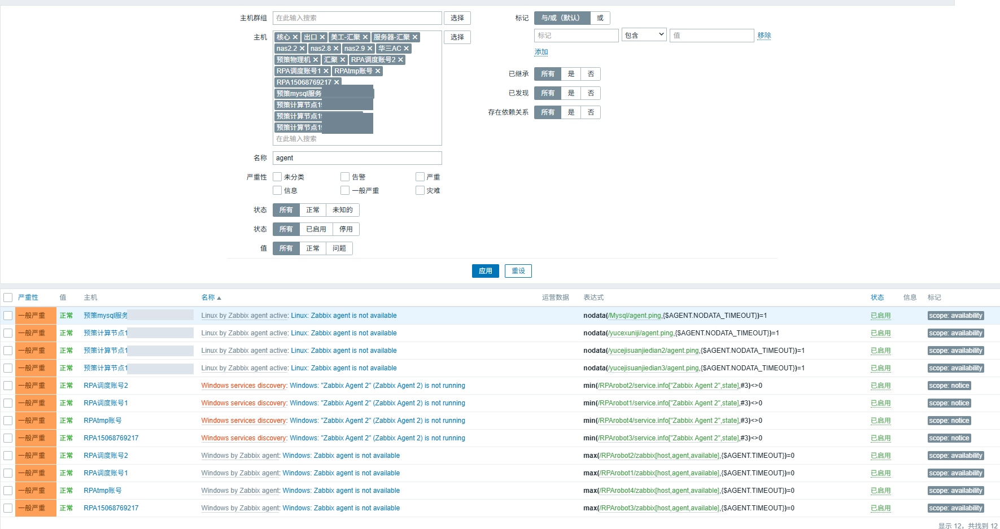
图：Linux 服务机和 RPA Windows 主机 Agent 不可用触发器统一确认。原因：核对服务器/RPA 联通性告警；操作：批量搜索 agent；结果：Agent 不可用和 Agent 2 未运行触发器已覆盖。
磁盘空间告警验证截图
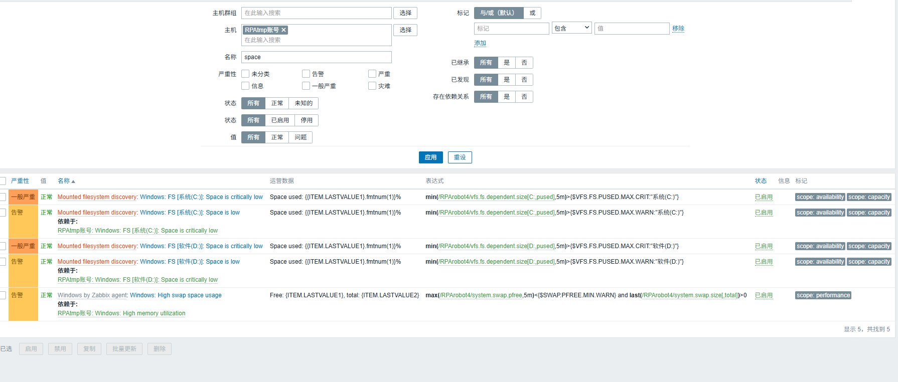
图：RPA Windows 主机磁盘空间触发器确认。原因：确认 RPA 机器磁盘不足是否会告警；操作：搜索 space；结果：C/D 盘低空间和严重低空间触发器已启用。
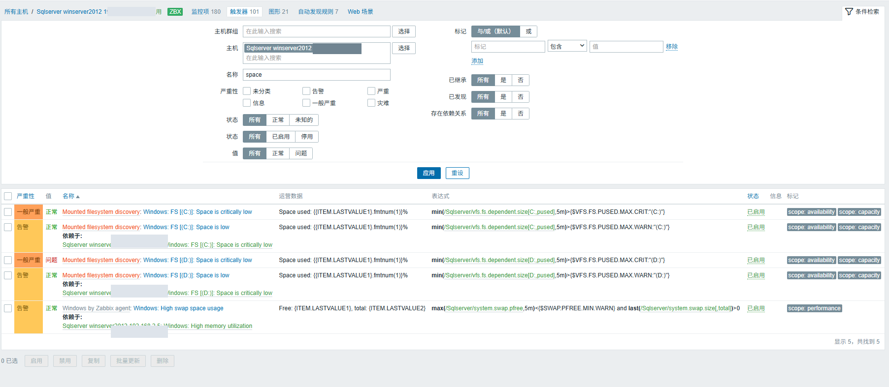
图：SQL Server Windows 主机磁盘空间触发器确认。原因：确认服务机磁盘告警覆盖情况；操作：搜索 space；结果：D 盘严重低空间被识别为真实 Problem。
四、关键配置步骤
1. 配置核心设备 Action 范围
• 将原先只针对出口路由器的通知动作扩展为“核心设备告警通知”，按主机群组做 OR 匹配。
• 选择主机群组：Databases、Linux servers、Network devices、rpa-windows、Zabbix servers、群晖nas。
• 计算方式实际为 B or C or D or E or F or G，表示属于任意一个核心组即可通知。
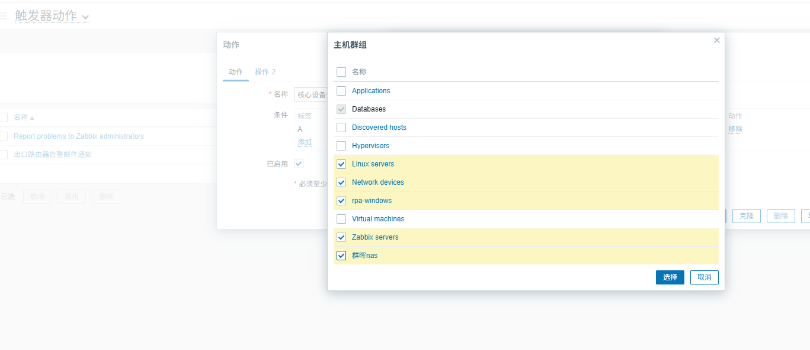
图1：核心设备告警通知范围选择，覆盖 Databases、Linux servers、Network devices、rpa-windows、Zabbix servers、群晖nas。
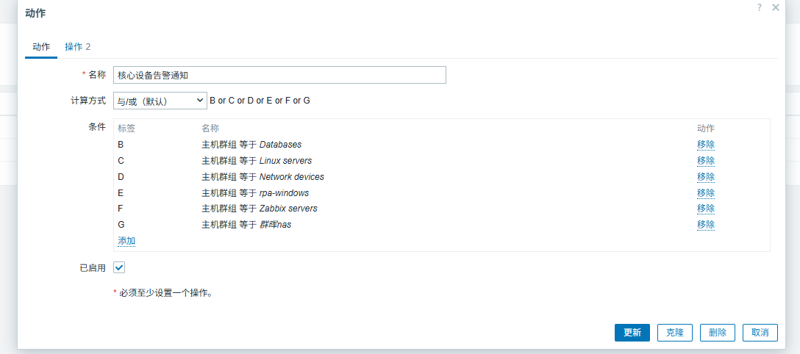
图2：核心设备告警通知 Action 条件，使用主机群组 OR 逻辑匹配多个核心设备组。
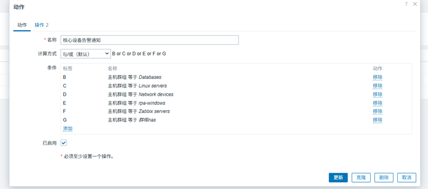
图：核心设备告警通知 Action 条件确认。原因：原 Action 只覆盖出口路由器；操作：改为多个核心主机组 OR 匹配；结果：RPA、服务机、NAS、路由器、交换机均纳入通知范围。
2. 配置 Email(HTML) 通知
• 使用 163 邮箱 SMTP 授权码，测试媒介发送成功。
• Admin 用户绑定 Email(HTML) 报警媒介，严重性勾选警告、一般严重、严重、灾难。
• 启用时间为 1-7,00:00-24:00。
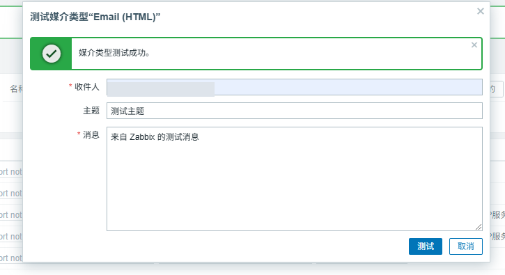
图3：Email(HTML) 媒介测试成功，说明 Zabbix 已能通过 163 SMTP 发送邮件。
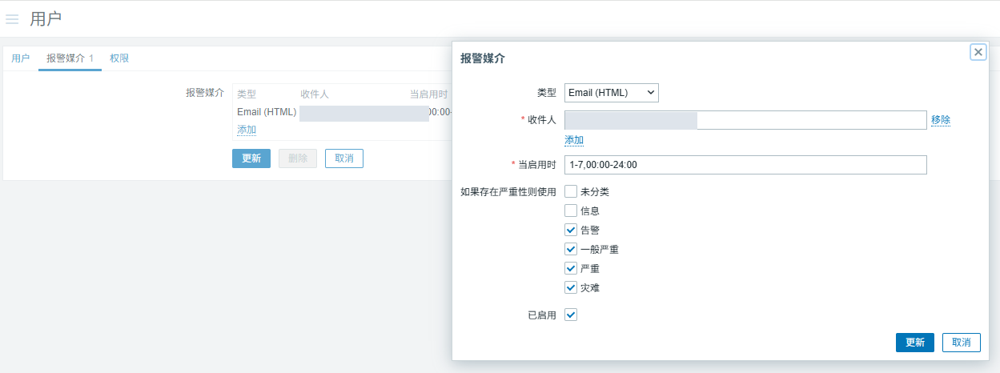
图4：给 Admin 用户添加 Email(HTML) 报警媒介，设置收件人、启用时间和告警级别。
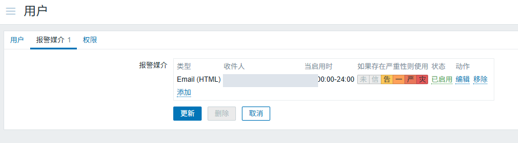
图5：Admin 用户已绑定 Email(HTML) 报警媒介，状态为已启用。
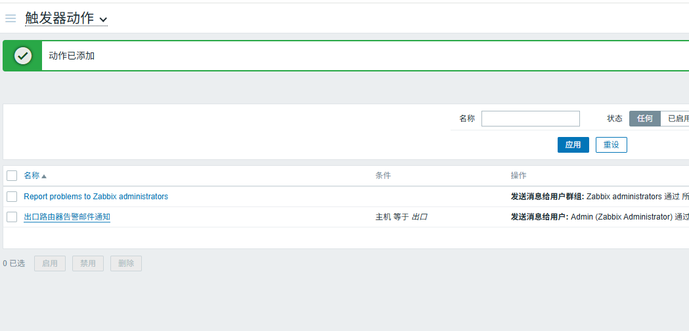
图6：触发器动作创建成功，出口路由器告警邮件通知已启用。
3. 配置钉钉单聊机器人通知
• 使用钉钉开发者平台企业内部应用机器人，不使用群机器人。
• Zabbix Webhook 参数包含 AppKey、AppSecret、RobotCode、UserId、Subject、Message。
• 补充问题和恢复消息模板，解决 “No message defined for media type” 报错。
• 测试媒介返回 OK，钉钉客户端收到单聊告警。
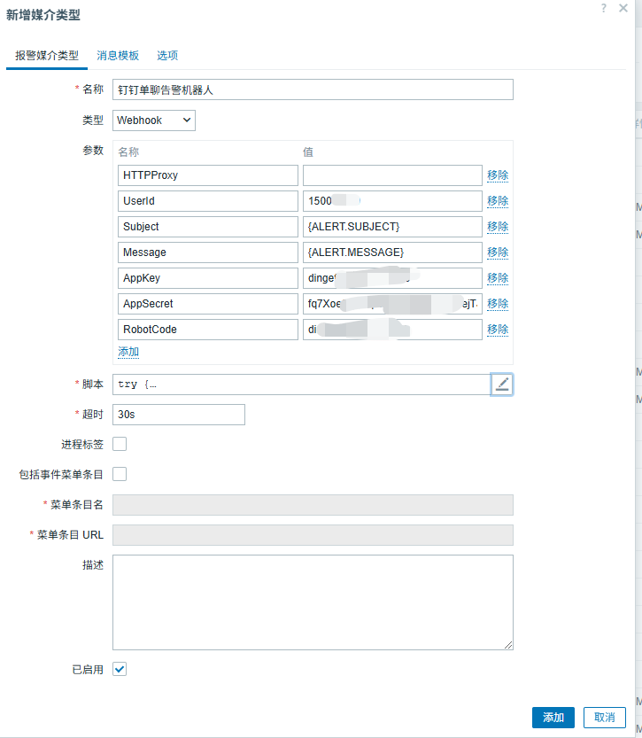
图12：钉钉单聊机器人媒介类型配置，包含 AppKey、AppSecret、RobotCode、UserId、Subject、Message 等参数。
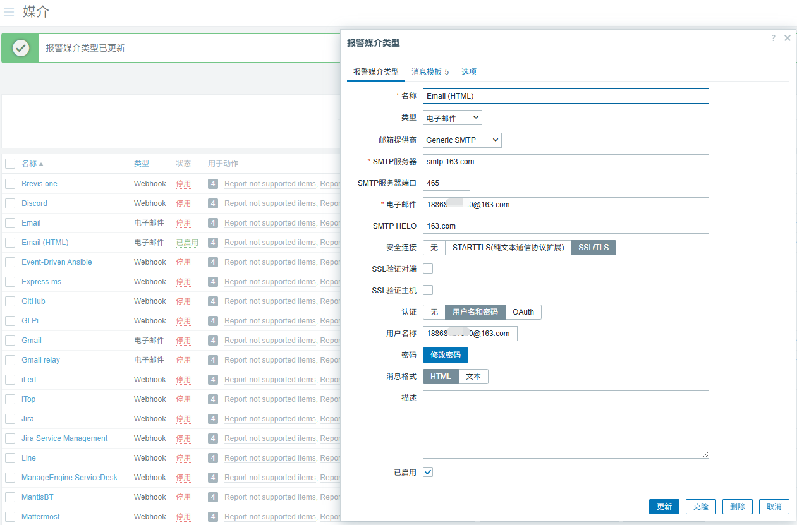
图17：钉钉媒介类型参数配置页面，测试前需填写 AppKey、AppSecret、RobotCode、UserId。
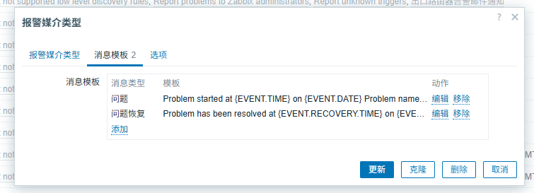
图13：钉钉媒介类型消息模板配置，补充问题和恢复消息模板。
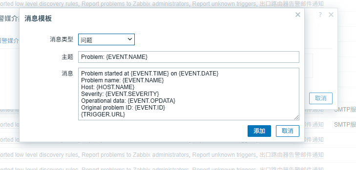
图：钉钉媒介类型的问题消息模板。原因：动作日志提示 No message defined for media type；操作：补充 Problem 消息模板；结果：钉钉 Action 后续可正常生成消息内容。
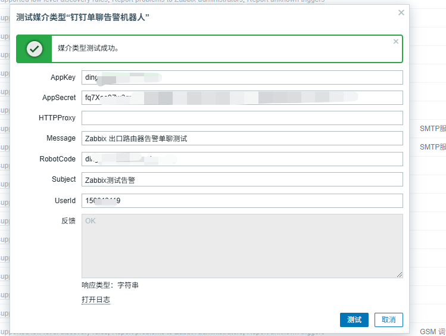
图14：钉钉单聊机器人媒介测试成功，Zabbix 返回 OK。
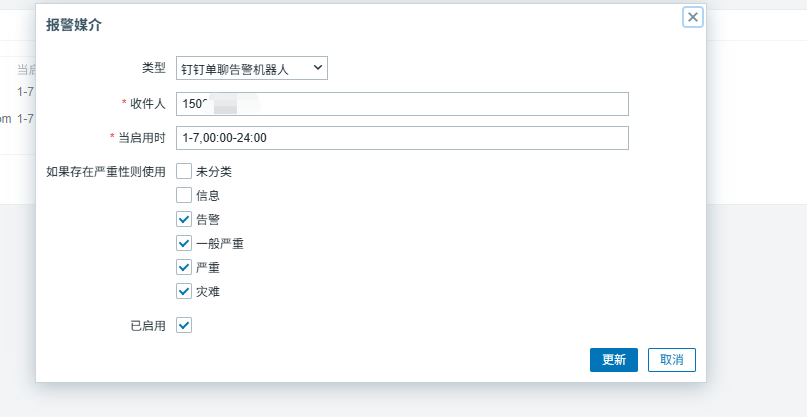
图15：给 Admin 用户添加钉钉单聊告警机器人媒介，启用警告及以上级别。
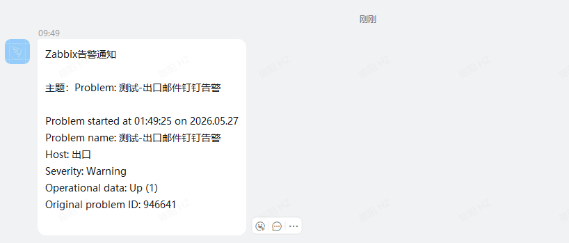
图16：钉钉客户端收到 Zabbix 告警通知，验证单聊机器人推送成功。
4. 配置 Action 操作和恢复操作
• 操作：发送给 Admin，发送至媒体类型选择“全部可用”。
• 恢复操作：同样发送给 Admin，发送至媒体类型选择“全部可用”。
• 这样同一条告警会同时进入邮箱和钉钉。
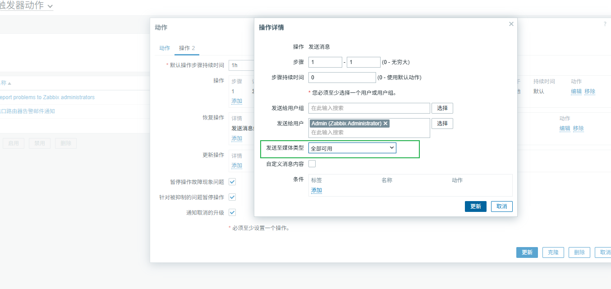
图7：Action 操作配置为发送给 Admin，发送至媒体类型为全部可用。
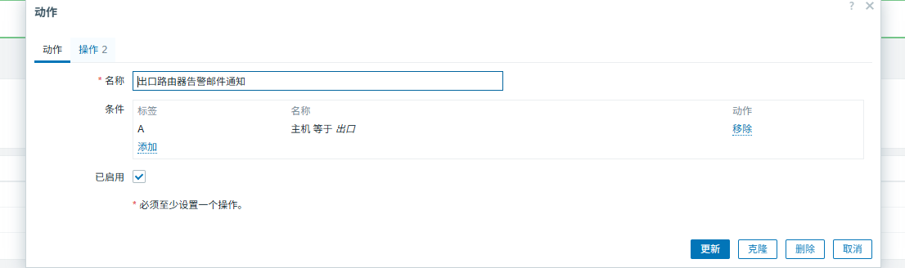
图8：Action 操作列表中已包含发送给 Admin 的告警操作。
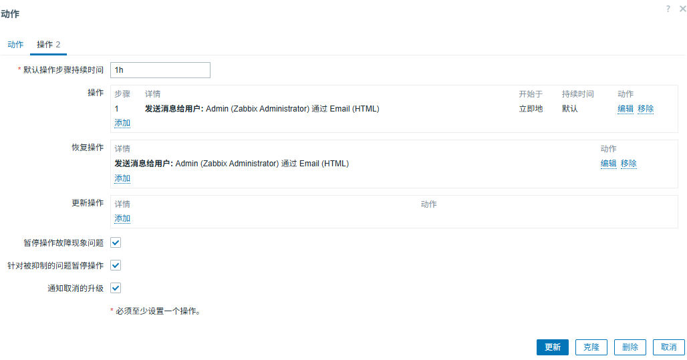
图9：恢复操作同样发送给 Admin，保证 Problem 恢复时也有通知链路。
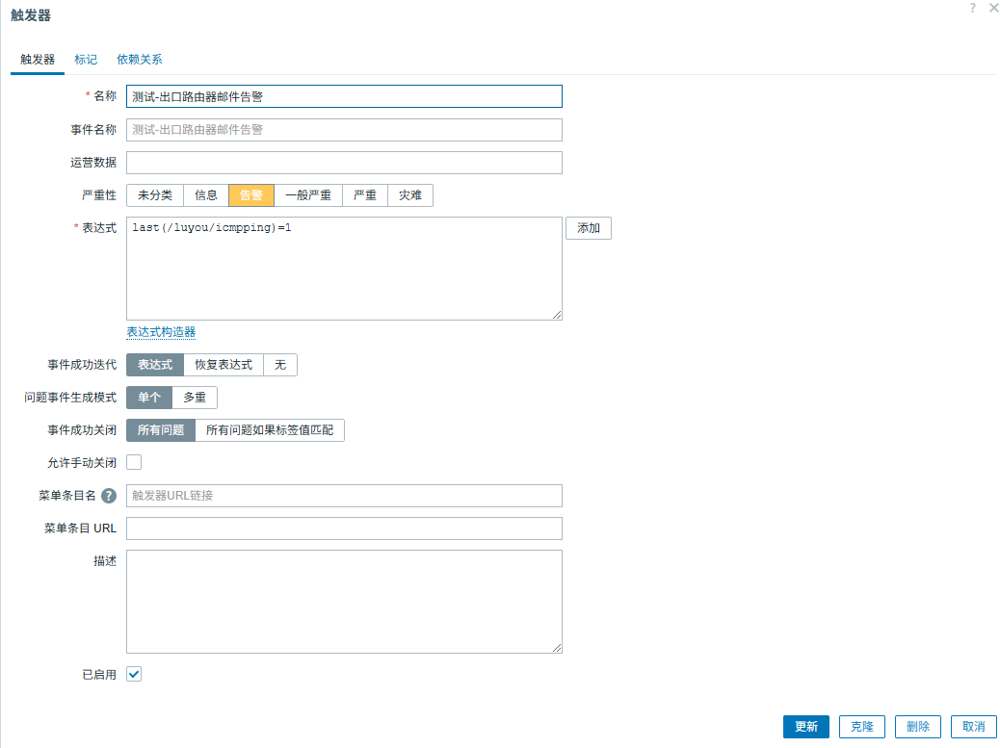
图10：临时测试触发器配置，用于验证“触发器 -> Action -> 通知”的闭环。
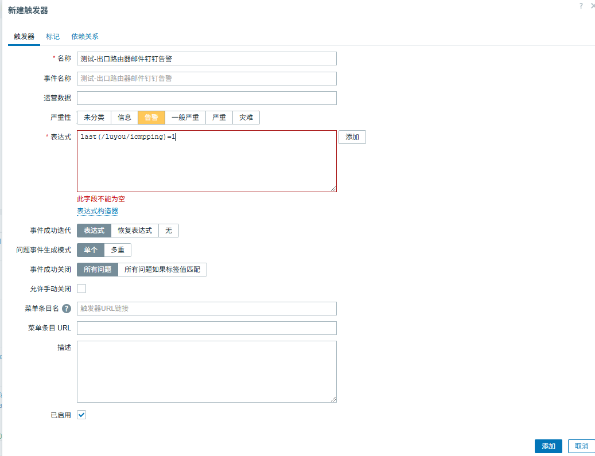
图11：测试触发器填写 ICMP 表达式时的排错截图，后续采用表达式构造器避免主机名错误。
5. 新增 SQL Server 1433 端口监控
针对 SQL Server Windows 主机 [SQL_SERVER_IP] 新增简单检查，用于确认 SQL Server 业务端口是否可连接。
监控项名称：SQL Server 1433端口可用性
类型：简单检查
键值：net.tcp.service[tcp,[SQL_SERVER_IP],1433]
返回值：1 表示端口可用；0 表示端口不可用。
触发器：max(/SQL_SERVER_HOST/net.tcp.service[tcp,[SQL_SERVER_IP],1433],#3)=0
说明：连续 3 次检测均为 0 时触发严重告警，避免一次网络抖动造成误报。
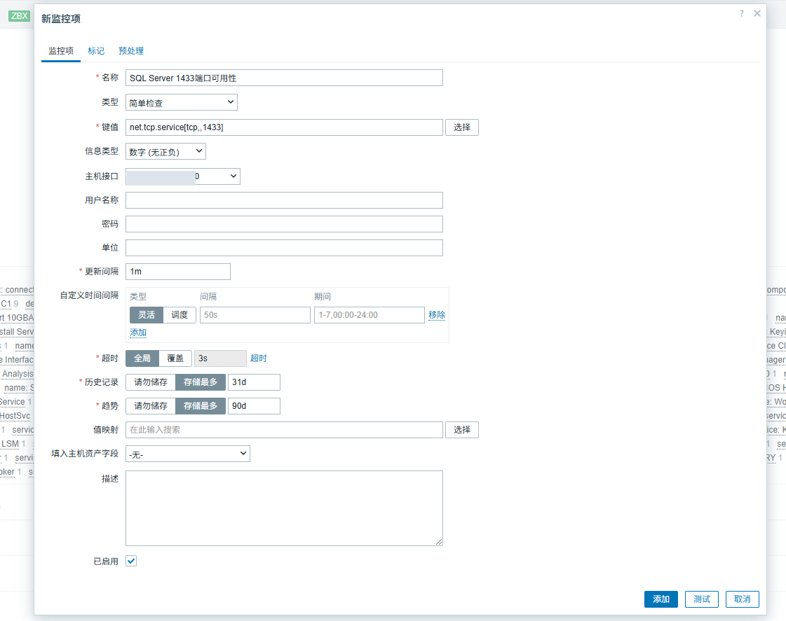
图：SQL Server 1433 端口可用性监控项配置。原因：SQL Server 关键业务端口需要单独监控；操作：新增简单检查监控项；结果：开始采集 1433 端口可用性。
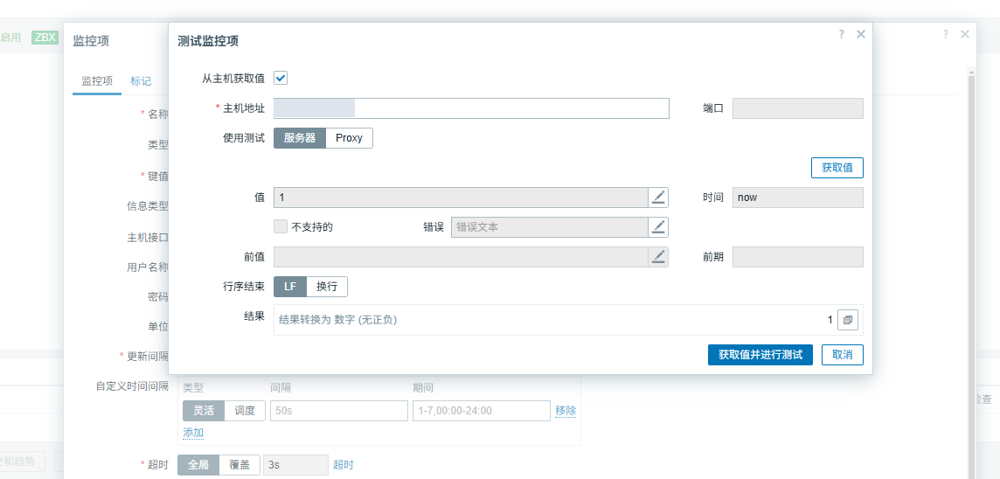
图：SQL Server 1433 端口监控项测试返回 1。原因：创建触发器前先确认端口监控项可用；操作：点击测试获取值；结果：返回 1，说明 1433 当前可连接。
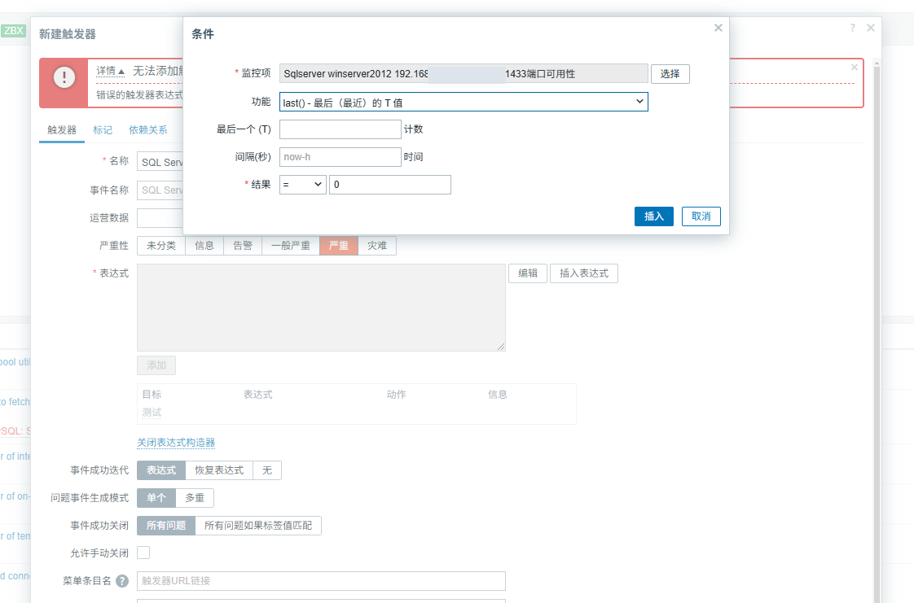
图：SQL Server 1433 触发器表达式构造器初始选择。原因：手写表达式曾因主机名不匹配报错；操作：改用表达式构造器；结果：自动引用正确主机和监控项。
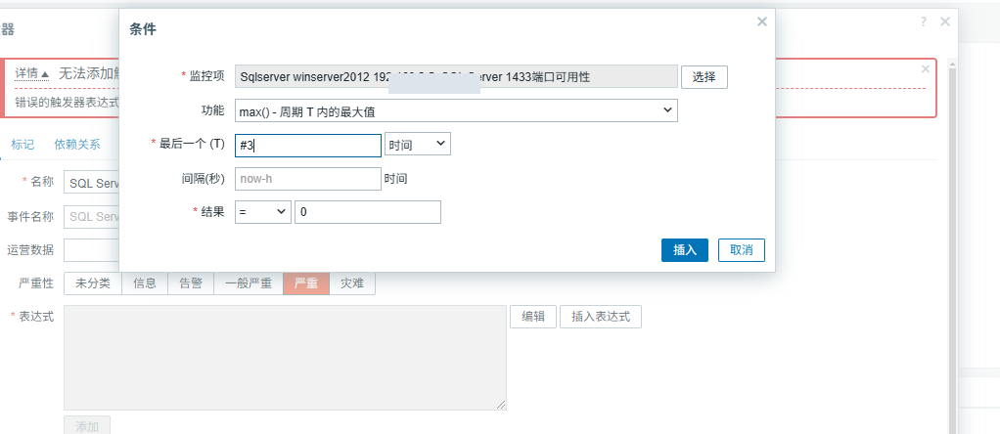
图：SQL Server 1433 触发器使用 max() 和 #3。原因：避免一次网络抖动误报；操作：设置最近 3 次最大值等于 0；结果：连续 3 次不可用才触发严重告警。
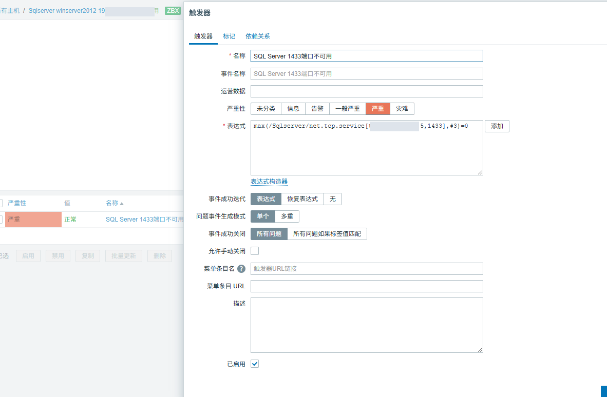
图：SQL Server 1433 端口不可用触发器创建完成。原因：确认新增端口告警已保存并生效；操作：保存触发器；结果：当前状态正常。
五、验证方法
| 验证项 | 检查位置 | 成功标准 |
| 媒介测试 | 告警 -> 媒介类型 -> 测试 | Email(HTML) 与钉钉单聊机器人均测试成功。 |
| Action 触发 | 报告 -> 动作日志 | 同一 Problem 有 Email 和钉钉两条发送记录，状态为已发送。 |
| 临时触发器 | 监控 -> 问题 | 临时测试触发器产生 Problem，邮箱和钉钉均收到通知。 |
| 当前告警 | 监控 -> 问题 | 清理误报后，当前 Problem 页面只保留真实需要处理的问题。 |
| SQL 1433 | 监控 -> 最新数据 | SQL Server 1433端口可用性返回 1。 |
六、当前阶段结论
第一阶段可以验收为：Zabbix 基础告警通知闭环完成。当前重点已经从“能不能通知”转为“哪些告警需要保留、哪些误报需要收敛、哪些高级监控放到第二阶段”。
• 已完成：通知链路、核心设备 Action 范围、基础可用性告警、磁盘告警、RPA Agent 告警、SQL Server 1433 端口告警。
• 暂缓：群晖 NAS 专用模板、NAS 存储池/RAID/硬盘健康、路由器关键接口、交换机上联口、路由器日志关键字、Dify AI 日报。
• 后续建议：先观察 3 到 7 天告警质量，再调整阈值和通知级别。
七、第二阶段待办
| 待办 | 建议处理方式 |
| NAS 专用监控 | 导入 Synology SNMP 模板，补充 Volume、Storage Pool、Disk、RAID、温度告警。 |
| 网络接口精细化 | 只对公网口、核心互联口、交换机上联口启用 Down 告警，普通接入口不告警。 |
| 路由器日志关键字 | 对 Attack、drop、cpcar、IKE_NEGO_FAIL 做日志聚合和分级告警。 |
| Dify AI 日报 | Python 汇总 Zabbix 问题、路由器日志和关键指标后发给 Dify 生成日报。 |
| 告警清单文档 | 沉淀设备、触发器、严重性、通知方式、处理建议和负责人。 |